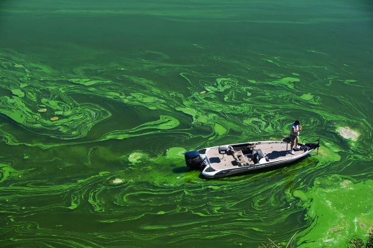

Home | Research
Why is it Important to Improve Water Pollution
1. What is Water Pollution?
Water pollution occurs when harmful substances—often chemicals or
microorganisms—contaminate a stream,river, lake, ocean, aquifer,
or other body of water, degrading water quality and rendering it
toxic to humans or the environment.
2. What Are the Causes of Water Pollution?
Water is uniquely vulnerable to pollution. Known as a “universal
solvent,” water is able to dissolve more substances than any other
liquid on earth. It’s the reason we have Kool-Aid and brilliant
blue waterfalls. It’s also why water is so easily polluted.
Toxic substances from farms, towns, and factories readily
dissolve into and mix with it, causing water pollution.
3. What Can You Do to Prevent Water Pollution?
- With your actions
- Reduce your plastic consumption and reuse or recycle plastic when you can.
- Properly dispose of chemical cleaners, oils, and non-biodegradable items to keep them from ending up down the drain.
- Maintain your car so it doesn’t leak oil, antifreeze, or coolant.
- If you have a yard, consider landscaping that reduces runoff and avoid applying pesticides and herbicides.
- With your voice
- One of the most effective ways to stand up for our waters is to speak out in support of the Clean Water Rule, which clarifies the Clean Water Act’s scope and protects the drinking water of one in three Americans.
- Tell the federal government, the U.S. Army Corps of Engineers, and your local elected officials that you support the Clean Water Rule. Also, learn how you and those around you can get involved in the policymaking process. Our public waterways serve every American. We should all have a say in how they’re protected.

Toxic green algae in Copco Reservoir, northern California Aurora Photos/Alamy